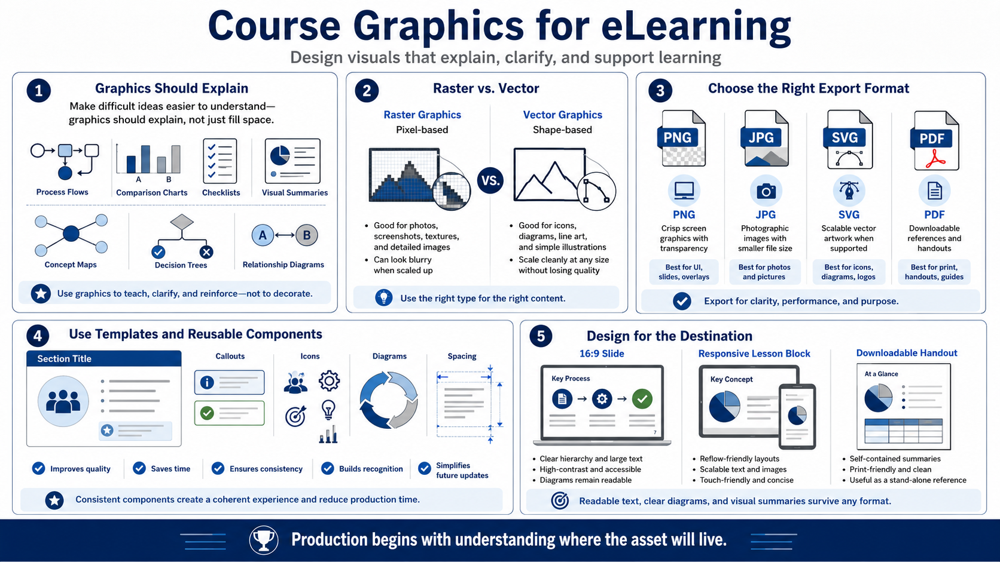

Creating Course Graphics and Infographics
Connecting to LMS... Progress: in progress

Narration
Course graphics should explain something. Useful eLearning graphics include process flows, comparison charts, checklists, visual summaries, concept maps, decision trees, and diagrams that show relationships. A graphic that only fills space may make a screen look complete, but it does not necessarily help learning. The best graphics earn their place by making a difficult idea easier to understand.
A practical production choice is raster versus vector. Raster graphics are pixel-based and are commonly used for photos, screenshots, textures, and detailed images. Vector graphics are shape-based and can often scale cleanly, which makes them useful for icons, diagrams, line art, and simple illustrations. The format should match the use case and the expected screen size.
Export formats matter. PNG is often useful for crisp screen graphics with transparency. JPG may be appropriate for photographic images where file size matters. SVG can be useful for scalable vector artwork when the delivery environment supports it. PDF can work well for downloadable references. These are practical choices, not universal rules, and they should be tested in the course environment.
Consistent templates and reusable components improve quality and speed. A course may use a standard diagram style, repeated icon treatment, consistent callout boxes, and predictable spacing. Reuse helps learners recognize patterns, and it helps designers update assets later. Consistency should not make every screen identical, but it should make the course feel coherent.
Design graphics for the destination. A 16:9 slide, a responsive lesson block, and a downloadable handout may require different compositions. Text inside a graphic must stay readable. Diagrams should survive resizing. A visual summary should remain useful outside the course if learners download it as a reference. Production begins with understanding where the asset will live.